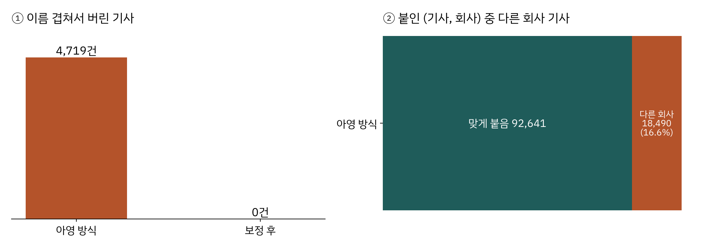

아영님 정리본(articles_clean_200)은 이렇게 만들어졌다.
03_text_features.py의 clean_news를 run_clean3.py로 실행이 방식을 파일럿 기사에 그대로 돌리고, 같은 기사에 우리 매칭 규칙을 돌린 결과와 하나씩 맞춰 봤다.

| 문제 | 원인 | 영향 (파일럿 기준) |
|---|---|---|
| ① 이름 겹치는 회사 기사가 빠짐 | 4열로 바꾸면서 '이름을 쓴 기간'(name_first, name_last)이 빠짐. 예: 'SK'는 2015-07까지 003600, 2015-08부터 034730인데 이 구분이 사라짐 | 4,719건이 '모호'로 버려짐 엉뚱한 종목에 붙은 것도 1,483건 |
| ② 다른 회사 기사가 섞임 | clean_news는 이름 앞뒤에 영문·숫자가 붙는 경우만 거름. 한글이 붙거나 리포트 꼬리표인 경우는 못 거름 | 붙인 111,131건 중 18,490건(16.6%)이 다른 회사 기사 |
① 때문에 기사가 빠진 회사 (많은 순)
| 영원무역 | SK | 한국타이어 | 오리온 | 제일모직 | 롯데제과 | 만도 | 녹십자 | 삼성물산 | BGF리테일 | 한진해운 | 신한은행 |
|---|---|---|---|---|---|---|---|---|---|---|---|
| 513 | 442 | 428 | 338 | 293 | 288 | 275 | 248 | 247 | 238 | 224 | 215 |
② 실제로 잘못 붙은 예
| 제목 | 붙은 회사 | 왜 틀렸나 |
|---|---|---|
| 현대차, 쏘나타가 9월판매 기폭제-GS | GS | '-GS'는 리포트를 쓴 증권사 |
| [GS칼텍스배 프로기전] 처음과 끝 | GS | GS칼텍스 바둑대회 |
| CJ오쇼핑 '판매수수료 무료' 방송… | CJ | CJ오쇼핑은 다른 회사 |
| KCC건설, 268% 증자비율에… | KCC | KCC건설은 다른 회사 |
| [대한민국 멀티미디어기술대상] 대통령상 / 삼성전자… | 대상 | '기술대상'의 대상 |
| '두산서 방출' 이재우, 전격 한화행 확정 | 두산, 한화 | 야구 선수 이적 |
| 하이트진로음료, '하이트제로' 시음회 | 하이트진로 | 자회사 |
팀 원본 코드는 그대로 두고, 아영_정리보정.py의 함수 두 개만 끼워 넣는다.
from 아영_정리보정 import to_name_dict, postfilter
name_dict = to_name_dict("company_list_최종.csv") # 4열 변환 대신 (이름 기간 반영)
clean = clean_news(raw, name_dict) # 기존 코드 그대로
clean = postfilter(clean, "company_list_최종.csv") # 추가 한 줄 (다른 회사 기사 제거)
필요한 파일: 아영_정리보정.py, match_rules.py, company_list_최종.csv (run_clean3.py와 같은 폴더)
| 항목 | 아영 방식 | 보정 후 |
|---|---|---|
| 이름 겹쳐서 버린 기사 | 4,719건 | 0건 |
| 다른 회사 기사 제거 | 안 함 | 16,755건 제거 |
| 최종 (기사, 회사) 쌍 | 111,131 | 98,070 |
| 우리 매칭 규칙 결과와 겹치는 비율 | – | 91.6% |
남는 8.4% 차이는 팀 코드가 긴 이름을 먼저 지우는 방식이 조금 달라서 생긴 것으로, 잘못 붙는 기사는 보정 후 남지 않는다.